Inicio › Monitores
Monitores: precios en Honduras y dónde comprar más barato
113 productos de 6 tiendas, con el precio de cada una. Actualizado el 14 de noviembre de 2026.
Monitores SamsungMonitores LEDMonitores DellMonitores BracketMonitores AOCMonitores AcerMonitores LGMonitores HikvisionMonitores TCL
 Monitor Samsung 32" M5/FHD/Smart/Hdr5L 7,490En 2 tiendas · más barato en Diunsa
Monitor Samsung 32" M5/FHD/Smart/Hdr5L 7,490En 2 tiendas · más barato en Diunsa Monitor LED 24" Dell Pro E2425HM · FHD 100Hz 5ms · HDMI/VGA/DPL 4,395En 2 tiendas · más barato en Sycom
Monitor LED 24" Dell Pro E2425HM · FHD 100Hz 5ms · HDMI/VGA/DPL 4,395En 2 tiendas · más barato en Sycom Monitor Samsung 24"/FHD/IPS/100HZL 4,690En Diunsa
Monitor Samsung 24"/FHD/IPS/100HZL 4,690En Diunsa Monitor LED 27" Samsung Essential S3 · FHD 120Hz 5ms · 2xHDMI LS27F320GANXZAL 4,795.01En Sycom
Monitor LED 27" Samsung Essential S3 · FHD 120Hz 5ms · 2xHDMI LS27F320GANXZAL 4,795.01En Sycom Monitor LED 27" Dell E2725HM · FHD 100Hz 5ms · HDMI/VGA/DPL 5,395En 2 tiendas · más barato en Acosa
Monitor LED 27" Dell E2725HM · FHD 100Hz 5ms · HDMI/VGA/DPL 5,395En 2 tiendas · más barato en Acosa Monitor LED 27" Samsung Essential S3 S36GD Curvo · FHD 100Hz 4ms · HDMI/VGA LS27D366GANXZAL 4,995En Sycom
Monitor LED 27" Samsung Essential S3 S36GD Curvo · FHD 100Hz 4ms · HDMI/VGA LS27D366GANXZAL 4,995En Sycom Monitor LED 22" Dell Pro E2225HM · FHD 100Hz 5ms · VGA/HDMI/DPL 3,895En 2 tiendas · más barato en Sycom
Monitor LED 22" Dell Pro E2225HM · FHD 100Hz 5ms · VGA/HDMI/DPL 3,895En 2 tiendas · más barato en Sycom Monitor LED 27" Curvo Gamer Samsung Odyssey G6 · QHD/2K 240Hz 1ms SmartThings (1xDP/2xHDMI/1xRJ45) LS27BG652ENXGOL 13,490En 2 tiendas · más barato en Diunsa
Monitor LED 27" Curvo Gamer Samsung Odyssey G6 · QHD/2K 240Hz 1ms SmartThings (1xDP/2xHDMI/1xRJ45) LS27BG652ENXGOL 13,490En 2 tiendas · más barato en Diunsa Monitor LED 24" Curvo Samsung Essential S3 S36GD · FHD 100Hz 4ms · HDMI/VGA LS24D366GANXZAL 3,600.01En Sycom
Monitor LED 24" Curvo Samsung Essential S3 S36GD · FHD 100Hz 4ms · HDMI/VGA LS24D366GANXZAL 3,600.01En Sycom Monitor LED 32" Samsung Essential S3 · FHD 75Hz 8ms · HDMI/DP LS32B300NWNXGOL 6,995En Sycom
Monitor LED 32" Samsung Essential S3 · FHD 75Hz 8ms · HDMI/DP LS32B300NWNXGOL 6,995En Sycom Monitor LED 27" Gamer Samsung Odyssey G4 · FHD 240Hz 1ms (DP/2xHDMI) LS27BG402ENXGOL 7,995En Sycom
Monitor LED 27" Gamer Samsung Odyssey G4 · FHD 240Hz 1ms (DP/2xHDMI) LS27BG402ENXGOL 7,995En Sycom Monitor LG 24"/FHD/IPSL 3,890En Diunsa
Monitor LG 24"/FHD/IPSL 3,890En Diunsa Monitor LED 27" Gamer Samsung Odyssey G3 · FHD 165Hz 1ms (HDMI/DP) S27AG320NNXZAL 8,200.01En Sycom
Monitor LED 27" Gamer Samsung Odyssey G3 · FHD 165Hz 1ms (HDMI/DP) S27AG320NNXZAL 8,200.01En Sycom Monitor LED 27" Curvo Gamer Samsung Odyssey G5 · QHD/2K 165Hz 1ms (1xHDMI/1xDP) LS27CG552ENXZAL 8,200.01En Sycom
Monitor LED 27" Curvo Gamer Samsung Odyssey G5 · QHD/2K 165Hz 1ms (1xHDMI/1xDP) LS27CG552ENXZAL 8,200.01En Sycom Monitor Gamer LG 24" Ultragear/180HZ/1MSL 5,990En Diunsa
Monitor Gamer LG 24" Ultragear/180HZ/1MSL 5,990En Diunsa Monitor LED 25" Gamer Samsung Odyssey G4 · FHD 300Hz/240Hz 1ms (DP/HDMI) LS25HG400ENXZAL 9,395.01En Sycom
Monitor LED 25" Gamer Samsung Odyssey G4 · FHD 300Hz/240Hz 1ms (DP/HDMI) LS25HG400ENXZAL 9,395.01En Sycom Monitor LED 25" Gamer Samsung Odyssey G4 · FHD IPS 240Hz 1ms · 2xHDMI/DP · LS25BG402ENXGOL 9,395.01En Sycom
Monitor LED 25" Gamer Samsung Odyssey G4 · FHD IPS 240Hz 1ms · 2xHDMI/DP · LS25BG402ENXGOL 9,395.01En Sycom Monitor LG 29"/Wfhd/Ultra WideL 6,499En Diunsa
Monitor LG 29"/Wfhd/Ultra WideL 6,499En Diunsa Monitor Dell 24 Led Display Port Vga 1920X1080 E2425HL 4,519.01En Acosa
Monitor Dell 24 Led Display Port Vga 1920X1080 E2425HL 4,519.01En Acosa Monitor LED 26" LG 26WQ500-B · UWFHD 75Hz 1ms · 2XHDMIL 7,200En Sycom
Monitor LED 26" LG 26WQ500-B · UWFHD 75Hz 1ms · 2XHDMIL 7,200En Sycom Monitor LED 32 Samsung Smart M5 DP/HDMI 60hz 4ms LS32BM500ENXGOL 10,895En Sycom
Monitor LED 32 Samsung Smart M5 DP/HDMI 60hz 4ms LS32BM500ENXGOL 10,895En Sycom Monitor LED 32" Gamer Samsung Odyssey G5 · QHD/2K 180Hz 1ms (1xHDMI/1xDP) LS32FG502ENXZAL 10,995En Sycom
Monitor LED 32" Gamer Samsung Odyssey G5 · QHD/2K 180Hz 1ms (1xHDMI/1xDP) LS32FG502ENXZAL 10,995En Sycom Monitor LED 22" Dell E2225H · FHD 75Hz 5ms · VGA/DPL 3,995En Sycom
Monitor LED 22" Dell E2225H · FHD 75Hz 5ms · VGA/DPL 3,995En Sycom Monitor Gaming LG 27"/Ultra Gear · FHDL 7,990En Diunsa
Monitor Gaming LG 27"/Ultra Gear · FHDL 7,990En Diunsa Monitor LED 34" Samsung ViewFinity S5 · UWQHD/2K 100Hz 5ms · 2xHDMI/DP LS34C502GANXZAL 12,300En Sycom
Monitor LED 34" Samsung ViewFinity S5 · UWQHD/2K 100Hz 5ms · 2xHDMI/DP LS34C502GANXZAL 12,300En Sycom Monitor Dell 19.5 Led Display Port Vga 1600X900 E2020HL 3,745En Acosa
Monitor Dell 19.5 Led Display Port Vga 1600X900 E2020HL 3,745En Acosa Monitor Dell 27 Hdmi Vga Display Port E2726HSL 5,695En Acosa
Monitor Dell 27 Hdmi Vga Display Port E2726HSL 5,695En Acosa Monitor Dell 21.5 Led Vga 1920 X 1080 E2216hvL 5,890En Acosa
Monitor Dell 21.5 Led Vga 1920 X 1080 E2216hvL 5,890En Acosa Monitor LED 22" Dell SE2225HM · FHD 100Hz 5ms · HDMI/VGAL 3,500En Sycom
Monitor LED 22" Dell SE2225HM · FHD 100Hz 5ms · HDMI/VGAL 3,500En Sycom Monitor Dell 23.8 Led Vga Dp 1920X1080 E2422HL 6,170En Acosa
Monitor Dell 23.8 Led Vga Dp 1920X1080 E2422HL 6,170En Acosa Monitor Gaming LG 27"/Ultra GearL 9,990En Diunsa
Monitor Gaming LG 27"/Ultra GearL 9,990En Diunsa Monitor LED 32" Smart LG MyView 32SR50F-B · FHD 60Hz 5ms · 2xHDMI · + webOS 23L 9,995En Sycom
Monitor LED 32" Smart LG MyView 32SR50F-B · FHD 60Hz 5ms · 2xHDMI · + webOS 23L 9,995En Sycom Monitor LED 37" Samsung ViewFinity S7 S70D · 4K 60Hz 5ms · HDMI/DP LS37D700EANXZAL 14,995En Sycom
Monitor LED 37" Samsung ViewFinity S7 S70D · 4K 60Hz 5ms · HDMI/DP LS37D700EANXZAL 14,995En Sycom Monitor Samsung Gaming 32"/Qhd/240HZL 15,490En Diunsa
Monitor Samsung Gaming 32"/Qhd/240HZL 15,490En Diunsa Monitor LED 24" Dell Pro P2426H · FHD 120Hz 5ms · HDMI/DPL 7,200En Sycom
Monitor LED 24" Dell Pro P2426H · FHD 120Hz 5ms · HDMI/DPL 7,200En Sycom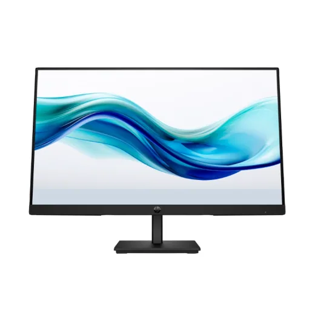
Monitor Hp 23.8 Hd 1920 X 1080 Hdmi Vga Series 3 Pro 324pfL 4,320En Acosa Monitor LED 34" Curvo Samsung ViewFinity S6 S65C · UWQHD/2K 100Hz 5ms · HDMI/DP/USB-C LS34C650UANXGOL 16,500En Sycom
Monitor LED 34" Curvo Samsung ViewFinity S6 S65C · UWQHD/2K 100Hz 5ms · HDMI/DP/USB-C LS34C650UANXGOL 16,500En Sycom Monitor LED 27" Dell Pro P2726H · FHD 120Hz 5ms · HDMI/DPL 8,895En Sycom
Monitor LED 27" Dell Pro P2726H · FHD 120Hz 5ms · HDMI/DPL 8,895En Sycom Monitor LED 32" LG 32UR550K-B UltraFine · 4K UHD 60Hz 4ms · HDMI/DPL 14,500.01En Sycom
Monitor LED 32" LG 32UR550K-B UltraFine · 4K UHD 60Hz 4ms · HDMI/DPL 14,500.01En Sycom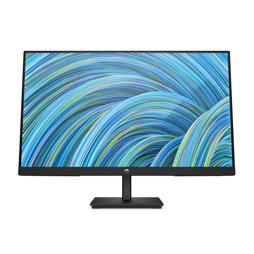
Monitor HP 24 P/15-FC0272LA/15-FC0070LAL 2,890En Diunsa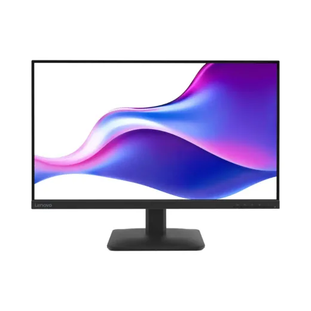
Monitor LED 27" Lenovo L27-4e · FHD 100Hz 4ms · HDMI/VGA A25270FL0L 4,800En Sycom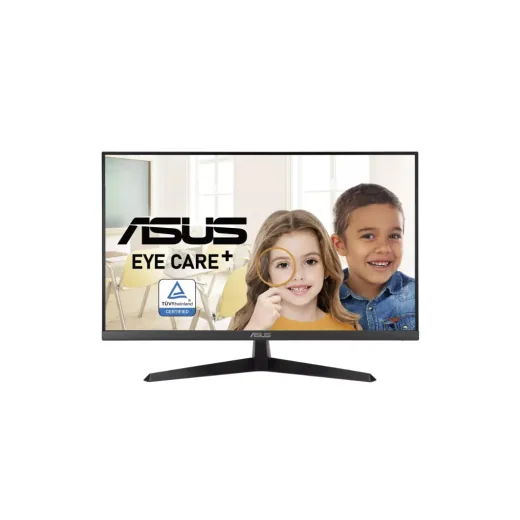
Monitor LED 27'' Asus VY279HE · FHD 75MHz 1ms (HDMI/VGA)L 7,200En Sycom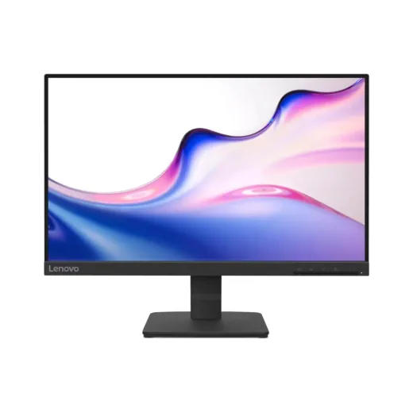
Monitor LED 22" Lenovo L22-4e · FHD 100Hz 4ms · HDMI/VGA D25215FL0L 3,450En Sycom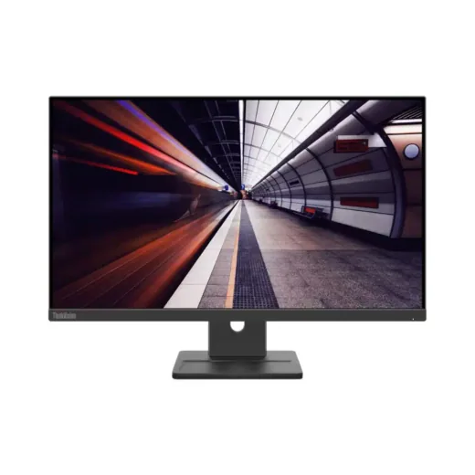
Monitor LED 24" Lenovo ThinkVision E24-30 · FHD 100Hz 4ms · HDMI/DPL 7,350En Sycom Monitor AOC 27 Gaming Hdmi DPL 3,895En Acosa
Monitor AOC 27 Gaming Hdmi DPL 3,895En Acosa Monitor Aoc 27 Gaming Ips 0 5Ms 180Hz 2Hdmi 1920X1080 Negro PlanoL 5,945.01En Acosa
Monitor Aoc 27 Gaming Ips 0 5Ms 180Hz 2Hdmi 1920X1080 Negro PlanoL 5,945.01En Acosa Monitor Aoc 23.8 Fhd IPS 1920 X 1080 120Hz Hdmi Vga NegroL 3,545En Acosa
Monitor Aoc 23.8 Fhd IPS 1920 X 1080 120Hz Hdmi Vga NegroL 3,545En Acosa Monitor AOC 27 Hdmi DPL 3,420En Acosa
Monitor AOC 27 Hdmi DPL 3,420En Acosa Monitor AOC 24 Gaming Hdmi VgaL 3,345.01En Acosa
Monitor AOC 24 Gaming Hdmi VgaL 3,345.01En Acosa Monitor AOC 23 8 Hdmi VgaL 3,270En Acosa
Monitor AOC 23 8 Hdmi VgaL 3,270En Acosa Monitor portátil Acer IPS 15.6" FHD Negro PM161QJBMIUUL 2,995En 2 tiendas · más barato en La Curacao
Monitor portátil Acer IPS 15.6" FHD Negro PM161QJBMIUUL 2,995En 2 tiendas · más barato en La Curacao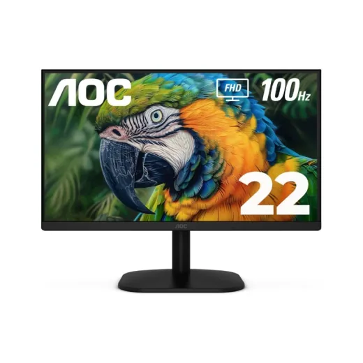
Monitor Aoc 21 45 Fhd 1920 X 1080 Hdmi Vga NegroL 2,999En Acosa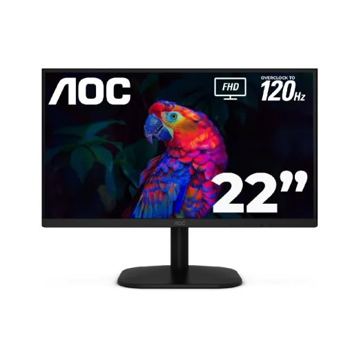
Monitor AOC 21 5 Hdmi VgaL 2,720En Acosa Monitor TCL QD-Mini LED 24.5" FHD Gris 25G64L 4,597En 2 tiendas · más barato en La Curacao
Monitor TCL QD-Mini LED 24.5" FHD Gris 25G64L 4,597En 2 tiendas · más barato en La Curacao Monitor Dell 24 Led Hdmi Display Port Vga 1920X1080 Ajustable 100hz E2425HsmL 4,745En Acosa
Monitor Dell 24 Led Hdmi Display Port Vga 1920X1080 Ajustable 100hz E2425HsmL 4,745En Acosa Monitor Acer 27 Gaming 2Hdmi Display Port 1920X1080 Vg270L 4,870En Acosa
Monitor Acer 27 Gaming 2Hdmi Display Port 1920X1080 Vg270L 4,870En Acosa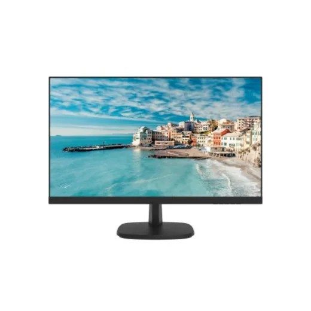
Monitor Hikvision 27 Hd Hdmi Vga 1920X1080L 4,249En Acosa Monitor LED 27" Curvo Gamer Vorttek VK270CG · FHD 180Hz 1ms (1xDP/1xHDMI)L 4,995En Sycom
Monitor LED 27" Curvo Gamer Vorttek VK270CG · FHD 180Hz 1ms (1xDP/1xHDMI)L 4,995En Sycom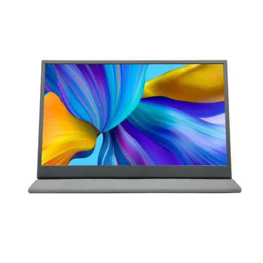
Monitor Portátil RadioShack 15.6" HD 2607175L 4,000En La Curacao Monitor TCL Mini LED 23.8" FHD Blanco 24G54L 3,990En 2 tiendas · más barato en La Curacao
Monitor TCL Mini LED 23.8" FHD Blanco 24G54L 3,990En 2 tiendas · más barato en La Curacao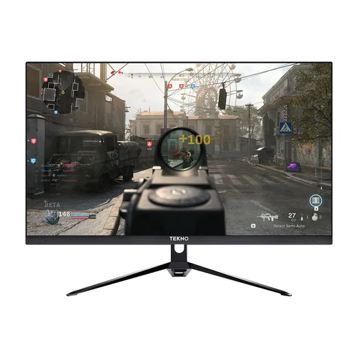
Monitor Tekno 27" FHD 165HZ · BkL 3,890En Diunsa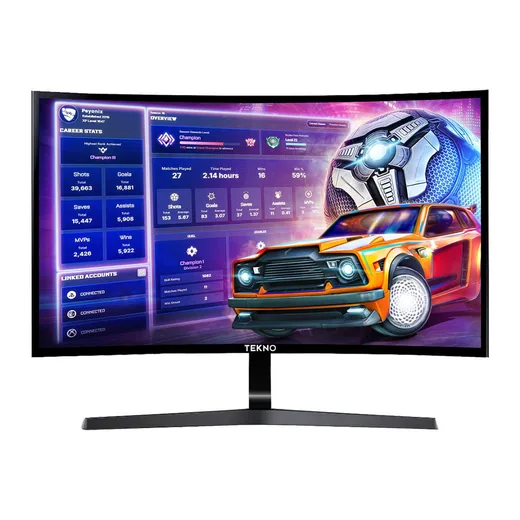
Monitor Tekno 32" Qhd 165HZ CurvoL 5,490En Diunsa Monitor LED 23.8" Curvo Gamer Vorttek VK238CG · FHD 180Hz 1ms (HDMI/DP)L 3,795En Sycom
Monitor LED 23.8" Curvo Gamer Vorttek VK238CG · FHD 180Hz 1ms (HDMI/DP)L 3,795En Sycom Monitor LED 27'' Curvo Gamer GIGABYTE GS27FC · FHD 180Hz 1ms (2xHDMI/DP)L 5,750En Sycom
Monitor LED 27'' Curvo Gamer GIGABYTE GS27FC · FHD 180Hz 1ms (2xHDMI/DP)L 5,750En Sycom Monitor LED 15.6'' Touchscreen Vorttek Enduratouch 1920x1080 HDMI/USBL 5,995En Sycom
Monitor LED 15.6'' Touchscreen Vorttek Enduratouch 1920x1080 HDMI/USBL 5,995En Sycom Bracket Hidraulico para uso en 1 Monitor Hasta 32" · 60" F6 RGB North Bayou NegroL 3,500En Sycom
Bracket Hidraulico para uso en 1 Monitor Hasta 32" · 60" F6 RGB North Bayou NegroL 3,500En Sycom Monitor LED 27" Vorttek VK270F75 VGA/HDMI 75Hz 1920x1080 12MSL 3,495En Sycom
Monitor LED 27" Vorttek VK270F75 VGA/HDMI 75Hz 1920x1080 12MSL 3,495En Sycom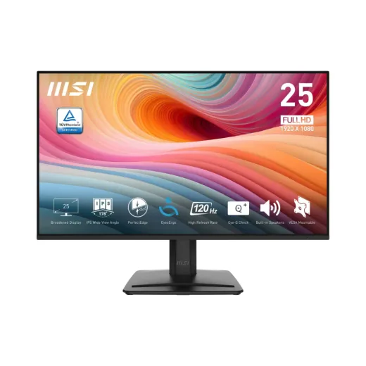
Monitor LED 25" MSI Pro MP251 E2 · FHD 120HZ 4MS · Hdmi/Vga 9S6-3PD2CM-041L 3,400En Sycom Monitor LED 24" Benq GW2485TC · FHD 75HZ 5MS · Hdmi/Usb-c/DpL 6,495En Sycom
Monitor LED 24" Benq GW2485TC · FHD 75HZ 5MS · Hdmi/Usb-c/DpL 6,495En Sycom Monitor LED 27'' Curvo Gamer Vorttek VKG27C1QHD · QHD/2K 180Hz 1ms (2xHDMI/2xDP)L 6,495En Sycom
Monitor LED 27'' Curvo Gamer Vorttek VKG27C1QHD · QHD/2K 180Hz 1ms (2xHDMI/2xDP)L 6,495En Sycom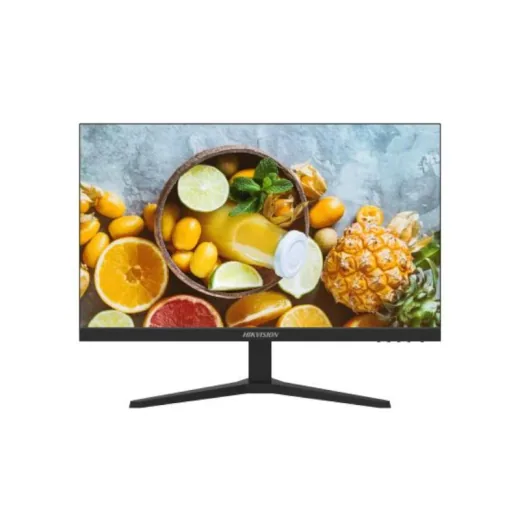
Monitor Hikvision 24 Hd Hdmi Vga 1920X1080 D5024L 3,245En Acosa Monitor Acer 24 Gaming 1Ms 180Hz Hdmi Display Port KG251QL 3,190En Acosa
Monitor Acer 24 Gaming 1Ms 180Hz Hdmi Display Port KG251QL 3,190En Acosa Monitor Acer 27 Curvo 1Ms 280Hz 2Hdmi Display Port ED270L 6,670En Acosa
Monitor Acer 27 Curvo 1Ms 280Hz 2Hdmi Display Port ED270L 6,670En Acosa Monitor LED 32." ViewSonic VA3209M · FHD 75Hz 4ms · HDMI/VGAL 6,795.01En Sycom
Monitor LED 32." ViewSonic VA3209M · FHD 75Hz 4ms · HDMI/VGAL 6,795.01En Sycom Monitor Acer 24 1Ms 120Hz Hdmi VGA Sb240y Ultra-thinL 3,070.01En Acosa
Monitor Acer 24 1Ms 120Hz Hdmi VGA Sb240y Ultra-thinL 3,070.01En Acosa Monitor LED 24" Vorttek VK2475B · FHD IPS 100Hz 5ms · VGA/HDMIL 2,795.01En Sycom
Monitor LED 24" Vorttek VK2475B · FHD IPS 100Hz 5ms · VGA/HDMIL 2,795.01En Sycom Monitor Acer 21.5 Fhd Va 1920 X 1080 Hdmi Vga Ek221q NegroL 2,735.1En Acosa
Monitor Acer 21.5 Fhd Va 1920 X 1080 Hdmi Vga Ek221q NegroL 2,735.1En Acosa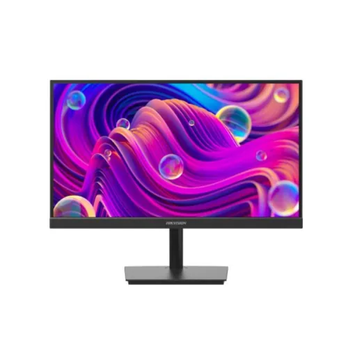
Monitor Hikvision 21 5 Hd Hdmi Vga 1920X1080L 2,699En Acosa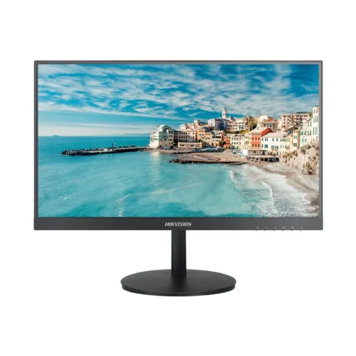
Monitor Hikvision 21.5 Hd Hdmi Vga 1920X1080 D5022L 2,695En Acosa Monitor Acer 21.5 Hd 1920 X 1080 Vga S212kl NegL 2,670En Acosa
Monitor Acer 21.5 Hd 1920 X 1080 Vga S212kl NegL 2,670En Acosa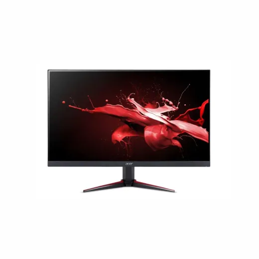
Monitor LED 27" Gamer Acer VG270 · FHD 144Hz 1ms (HDMI/VGA)L 7,995En Sycom Monitor TCL QD-Mini LED 27" QHD Gris 27G64L 7,999En 2 tiendas · más barato en La Curacao
Monitor TCL QD-Mini LED 27" QHD Gris 27G64L 7,999En 2 tiendas · más barato en La Curacao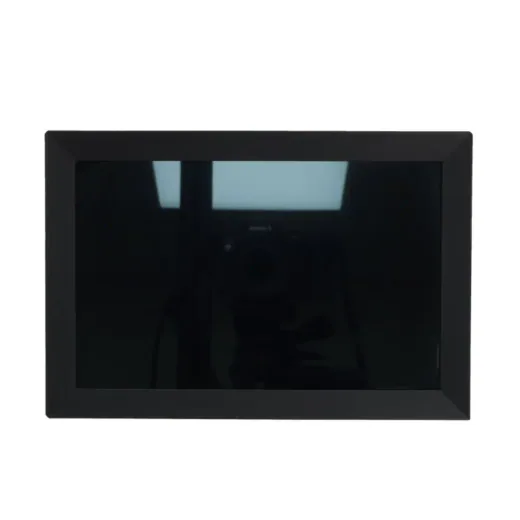
Monitor digital para fotos Radioshack 6301722L 2,500En La Curacao Monitor LED 20" Acer K202Q BI · FHD 75Hz 5ms · HDMI/VGA UM.IE0AA.004L 2,495.01En Sycom
Monitor LED 20" Acer K202Q BI · FHD 75Hz 5ms · HDMI/VGA UM.IE0AA.004L 2,495.01En Sycom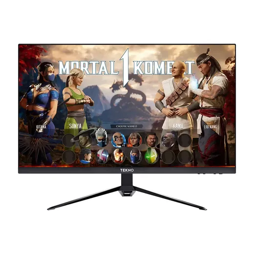
Monitor Tekno 27" FHD 75HZ · BlL 2,490En Diunsa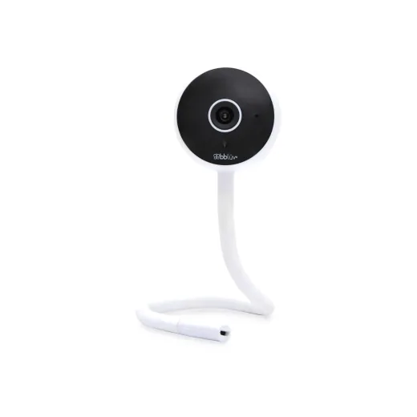
Video Monitor Bebé Wi-Fi HD ElectricoL 2,462.51En Lady Lee Monitor LED 32" Curvo Gamer AOC C32G42ZE · FHD 260Hz 0.3ms · HDMI/DPL 8,795En Sycom
Monitor LED 32" Curvo Gamer AOC C32G42ZE · FHD 260Hz 0.3ms · HDMI/DPL 8,795En Sycom Monitor LED 22" Vorttek VK215F100 · FHD 100Hz 14ms · VGA/HDMIL 2,395En Sycom
Monitor LED 22" Vorttek VK215F100 · FHD 100Hz 14ms · VGA/HDMIL 2,395En Sycom Monitor TCL QD-Mini LED 31.5" QHD Gris 32G64L 9,297En 2 tiendas · más barato en La Curacao
Monitor TCL QD-Mini LED 31.5" QHD Gris 32G64L 9,297En 2 tiendas · más barato en La Curacao Bracket Hidraulico para uso en 2 Monitor Hasta 17" · 32" H180-XE North Bayou BlancoL 2,195.01En Sycom
Bracket Hidraulico para uso en 2 Monitor Hasta 17" · 32" H180-XE North Bayou BlancoL 2,195.01En Sycom Bracket Hidraulico para uso en 2 Monitor Hasta 17" · 32" NB H180 North Bayou Matte CharcoalL 2,195.01En Sycom
Bracket Hidraulico para uso en 2 Monitor Hasta 17" · 32" NB H180 North Bayou Matte CharcoalL 2,195.01En Sycom Bracket Hidraulico para uso en 2 Monitor Hasta 22" · 32" G35 North BayouL 2,100En Sycom
Bracket Hidraulico para uso en 2 Monitor Hasta 22" · 32" G35 North BayouL 2,100En Sycom Bracket Hidraulico para uso en 2 Monitor Hasta 17" · 32" F160 North Bayou Matte CharcoalL 1,895En Sycom
Bracket Hidraulico para uso en 2 Monitor Hasta 17" · 32" F160 North Bayou Matte CharcoalL 1,895En Sycom Monitor LED 15.6'' Touchscreen Vorttek Enduratouch 1920x1080 HDMI/USB + Cajon de Dinero + Impresora POS Matricial + Cinta + PapelL 11,500En Sycom
Monitor LED 15.6'' Touchscreen Vorttek Enduratouch 1920x1080 HDMI/USB + Cajon de Dinero + Impresora POS Matricial + Cinta + PapelL 11,500En Sycom Bracket Hidraulico para uso en 1 Monitor Hasta 17"- 30" F80 North BayouL 1,650En Sycom
Bracket Hidraulico para uso en 1 Monitor Hasta 17"- 30" F80 North BayouL 1,650En Sycom Monitor LED 31.5" Curvo Alienware AW3225DM · 2K 180Hz 1ms 2XHDMI/DP 0WRPPML 12,995En Sycom
Monitor LED 31.5" Curvo Alienware AW3225DM · 2K 180Hz 1ms 2XHDMI/DP 0WRPPML 12,995En Sycom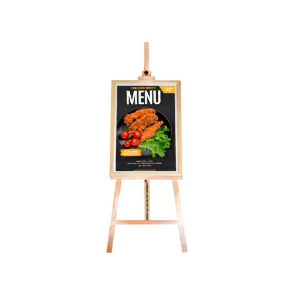
Pantalla 32inch DigitalFrame Monitor · Naranja Color con Android + Tripode para Pantalla 1.5M hasta 5kg No HDMIL 13,995.01En Sycom Bracket Hidraulico para uso en 1 Monitor Hasta 17" · 30" F80-XK North Bayou VerdeL 1,295En Sycom
Bracket Hidraulico para uso en 1 Monitor Hasta 17" · 30" F80-XK North Bayou VerdeL 1,295En Sycom Bracket Hidraulico para uso en 1 Monitor Hasta 17" · 30" F80-XV North Bayou Lake BlueL 1,295En Sycom
Bracket Hidraulico para uso en 1 Monitor Hasta 17" · 30" F80-XV North Bayou Lake BlueL 1,295En Sycom Bracket Hidraulico para uso en 1 Monitor Hasta 17" · 30" F80-XM North Bayou Gulf BlueL 1,295En Sycom
Bracket Hidraulico para uso en 1 Monitor Hasta 17" · 30" F80-XM North Bayou Gulf BlueL 1,295En Sycom Bracket Hidraulico para uso en 1 Monitor Hasta 17" · 30" F80-XJ North Bayou RosadoL 1,295En Sycom
Bracket Hidraulico para uso en 1 Monitor Hasta 17" · 30" F80-XJ North Bayou RosadoL 1,295En Sycom Bracket Hidraulico para uso en 1 Monitor Hasta 17"-30" F80-XD North Bayou AmarilloL 1,295En Sycom
Bracket Hidraulico para uso en 1 Monitor Hasta 17"-30" F80-XD North Bayou AmarilloL 1,295En Sycom Bracket Hidraulico para uso en 1 Monitor Hasta 17" · 32" A5 North Bayou NegroL 1,295En Sycom
Bracket Hidraulico para uso en 1 Monitor Hasta 17" · 32" A5 North Bayou NegroL 1,295En Sycom Monitor LED 40" Curvo Vorttek VK400GC · 5K IPS UltraWide 120Hz 1ms (DP/HDMI/USB-C)L 17,995En Sycom
Monitor LED 40" Curvo Vorttek VK400GC · 5K IPS UltraWide 120Hz 1ms (DP/HDMI/USB-C)L 17,995En Sycom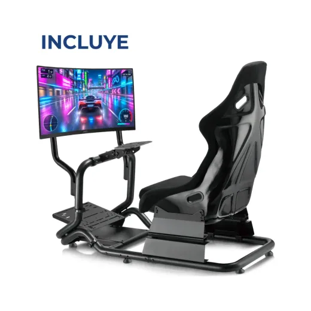
Simulador de Carreras de Aluminio con Silla Cockpit LRS07-BS-KP01 + MonitorL 17,995En Sycom Monitor AOC 27 Gaming Hdmi DPL 3,895En Acosa
Monitor AOC 27 Gaming Hdmi DPL 3,895En Acosa Monitor AOC 27 Hdmi VgaL 3,420En Acosa
Monitor AOC 27 Hdmi VgaL 3,420En Acosa Monitor AOC 24 Gaming Hdmi VgaL 3,345.01En Acosa
Monitor AOC 24 Gaming Hdmi VgaL 3,345.01En Acosa Monitor Acer 27 Gaming 1Ms 180Hz Hdmi Display Port XV271UL 6,733.4En Acosa
Monitor Acer 27 Gaming 1Ms 180Hz Hdmi Display Port XV271UL 6,733.4En Acosa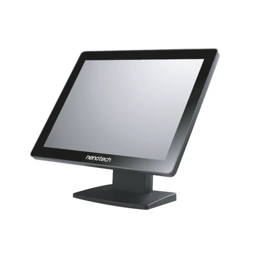
Monitor Nenotech 15 Touch Usb/Vga/Hdmi Xga 1024X768 12V DcL 7,105En Acosa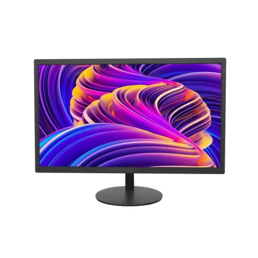
Monitor Hikvision 18 5 Hd Hdmi Vga 1366X768L 2,379.01En Acosa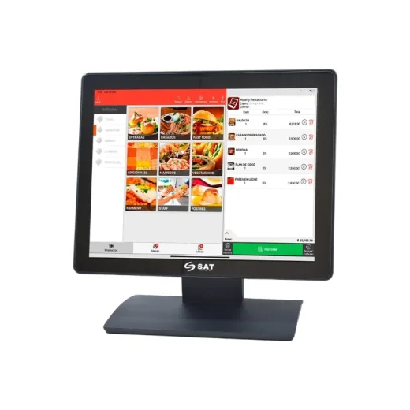
Monitor Sat Touch De 15 Pulgadas Resolucion 1024×768 Vga Usb HdmiL 8,939En Acosa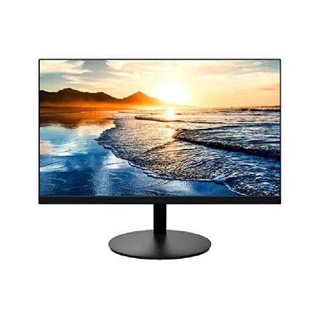
Monitor Planar 21.5 Fhd 1920 X 1080 Hdmi Vga Pln2200 NegroL 1,925En Acosa
¿Qué tienda es más barata en monitores?
Entre los 10 monitores que se venden en 2 o más tiendas:
| Tienda | Más barata en | Productos comparados |
|---|---|---|
| La Curacao | 5 (50%) | 5 |
| Sycom | 2 (20%) | 5 |
| Diunsa | 2 (20%) | 2 |
| Acosa | 1 (10%) | 3 |
| RadioShack | 0 (0%) | 5 |
Preguntas frecuentes
¿Dónde están más baratos los monitores en Honduras?
Entre los 10 monitores que se venden en 2 o más tiendas, La Curacao tuvo el precio más bajo en 5 (50%), según los precios del 14 de noviembre de 2026. Depende del producto: revisa la tabla de cada uno.
¿Cuánto cuestan los monitores en Honduras?
Desde L 1,295. Comparamos 113 productos de 6 tiendas.
¿Qué tiendas comparan?
Diunsa, Sycom, Acosa, La Curacao, RadioShack, Lady Lee.